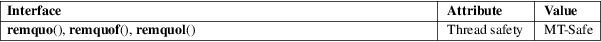

remquo, remquof, remquol − remainder and part of quotient
Math library (libm, −lm)
#include <math.h>
double
remquo(double x, double y, int
*quo);
float remquof(float x, float y,
int *quo);
long double remquol(long double x, long
double y, int *quo);
Feature Test Macro Requirements for glibc (see feature_test_macros(7)):
remquo(),
remquof(), remquol():
_ISOC99_SOURCE || _POSIX_C_SOURCE >= 200112L
These functions compute the remainder and part of the quotient upon division of x by y. A few bits of the quotient are stored via the quo pointer. The remainder is returned as the function result.
The value of the remainder is the same as that computed by the remainder(3) function.
The value stored via the quo pointer has the sign of x / y and agrees with the quotient in at least the low order 3 bits.
For example, remquo(29.0, 3.0) returns −1.0 and might store 2. Note that the actual quotient might not fit in an integer.
On success, these functions return the same value as the analogous functions described in remainder(3).
If x or y is a NaN, a NaN is returned.
If x is an infinity, and y is not a NaN, a domain error occurs, and a NaN is returned.
If y is zero, and x is not a NaN, a domain error occurs, and a NaN is returned.
See math_error(7) for information on how to determine whether an error has occurred when calling these functions.
The following
errors can occur:
Domain error: x is an infinity or y is 0, and
the other argument is not
a NaN
An invalid floating-point exception (FE_INVALID) is raised.
These functions do not set errno.
For an explanation of the terms used in this section, see attributes(7).

C11, POSIX.1-2008.
glibc 2.1. C99, POSIX.1-2001.
fmod(3), logb(3), remainder(3)